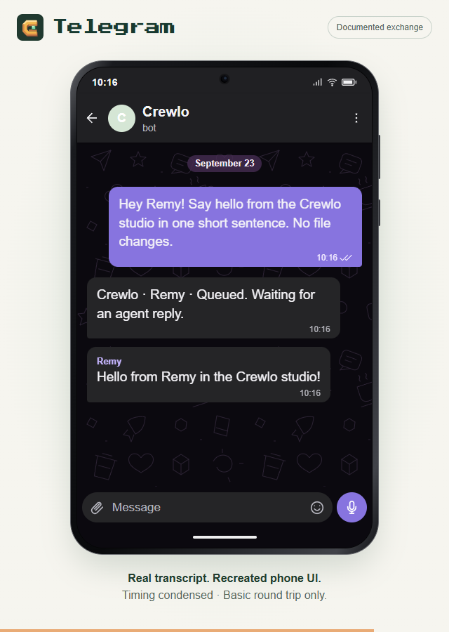

A moving character can explain an idea. To understand whether the application works, I also need a request that reaches a real agent and a result I can check.
Crewlo has two useful pieces of evidence so far: a small Codex mission through the packaged Windows application, and a separate basic Telegram exchange. They test different parts of the product.
Start with a result you can verify
The Windows validation used a temporary file containing a known marker. Codex received a read-only mission to inspect the file and return that marker through Crewlo.
The expected answer was precise. Either the returned text matched the file or it did not. The check exercised the packaged application, its internal message path, the terminal connection and an actual authenticated Codex session.
The marker came back as expected. The Windows validation notes describe the scope of that check; the reproducible helper lives in the repository.
This is a modest result, and a useful one. It establishes a working path for that specific mission on the development computer. It does not establish complex crew coordination or compatibility with every provider.
A separate message from Telegram
On September 23, a basic request was observed in Telegram Web:
Hey Remy! Say hello from the Crewlo studio in one short sentence. No file changes.
The exchange showed a queue acknowledgement, followed by Remy’s named response:
Hello from Remy in the Crewlo studio!
That check matters because it connects a message outside the desktop app to a reply from an agent. It also stays within a small, easy-to-understand task.
The transcript and verification notes record the observed exchange. Crewlo and the agent need to remain running; a messaging connection does not host the agent when the computer is off.
What the animations show
The website’s mission loop illustrates a longer story: a request arrives, Remy’s desk lights up, an activity becomes visible and a response opens. The example response is scripted.
The Telegram phone animation reconstructs the documented text with condensed timing. It is a presentation of the exchange, rather than a continuous screen recording or a physical-phone test.

A good first mission for your own project
After connecting your agent and choosing a project folder, start with a small request such as:
Summarize this project and identify its main entry points. Do not change any files.
Check that the selected agent is available, inspect any permission requests on the desktop and read the answer. Compare the named paths with the project itself before treating the summary as reliable.
This suggested request is a starting point, not a claim that every provider has passed the same test. The installation guide explains the first-mission flow.
What still needs checking
Longer tasks, reconnecting sessions and other providers need their own evidence. WhatsApp remains experimental and still needs a live acceptance test. Windows installation on a clean computer and macOS runtime behavior also remain open.
Small checks make the next step clearer. They let me say exactly what worked, keep the remaining questions visible and build from an observable result.